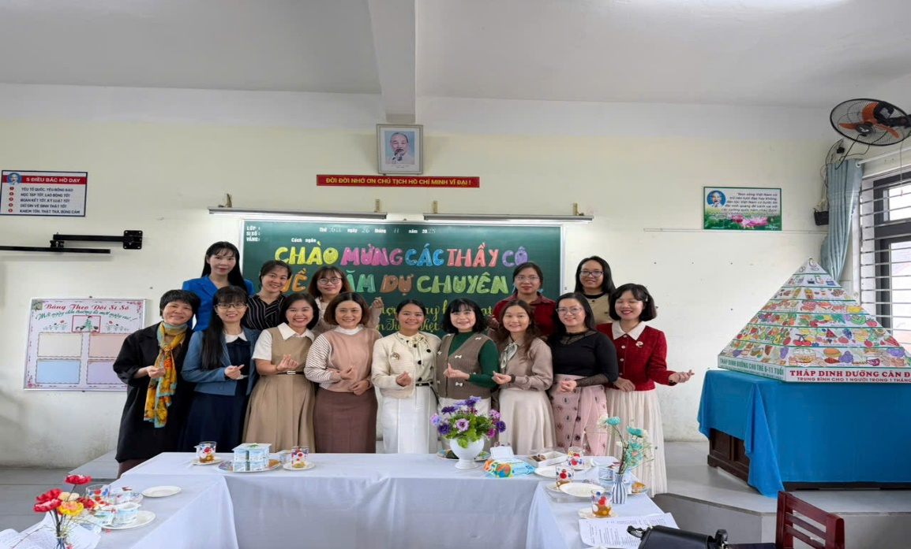

SỞ GD&ĐT THÀNH PHỐ ĐÀ NẴNG
TỔ CMNV TIẾNG VIỆT

Chuyên đề “Nâng cao chất lượng dạy học hoạt động viết sáng tạo trong môn Tiếng Việt Chương trình giáo dục phổ thông 2018 gắn với xây dựng giờ học Tiếng Việt hạnh phúc”
SỞ GD&ĐT THÀNH PHỐ ĐÀ NẴNG
TỔ CMNV TIẾNG VIỆT

Chuyên đề “Nâng cao chất lượng dạy học hoạt động viết sáng tạo trong môn Tiếng Việt Chương trình giáo dục phổ thông 2018 gắn với xây dựng giờ học Tiếng Việt hạnh phúc”
I. ĐẶT VẤN ĐỀ
1. Bối cảnh đổi mới và yêu cầu từ Chương trình giáo dục phổ thông (CTGDPT) 2018
Việc đổi mới căn bản và toàn diện giáo dục được thể hiện rõ nét trong CTGDPT 2018, đã chuyển đổi mục tiêu giáo dục từ việc truyền thụ kiến thức sang phát triển phẩm chất và năng lực của học sinh.
Môn Tiếng Việt ở cấp Tiểu học không chỉ còn là môn học cung cấp ngữ liệu, ngữ pháp, mà phải trở thành công cụ để học sinh phát triển năng lực giao tiếp một cách toàn diện. CTGDPT 2018 xác định rõ ràng: kĩ năng Viết phải đạt đến mức độ sáng tạo và biểu cảm. Cụ thể, chương trình yêu cầu học sinh không chỉ viết đúng chính tả, ngữ pháp, tạo ra văn bản theo cấu trúc, mà phải biết cách sử dụng ngôn ngữ giàu hình ảnh, cảm xúc, nhằm diễn đạt tư tưởng, tình cảm và trải nghiệm cá nhân một cách sinh động, có tính thẩm mĩ, đây là biểu hiện của năng lực văn học. Nếu giáo viên vẫn duy trì phương pháp dạy Viết theo khuôn mẫu, bài văn mẫu, học sinh sẽ không thể đạt được yêu cầu cao này. Sản phẩm của các em sẽ chỉ là sự lắp ghép máy móc, thiếu tính cá nhân hóa và không có khả năng biểu đạt cảm xúc chân thật, đi ngược lại mục tiêu phát triển năng lực tư duy độc lập và sáng tạo mà chương trình mới đề ra.
2. Thực trạng việc dạy học hoạt động viết sáng tạo trong môn Tiếng Việt CTGDPT 2018 hiện nay
Dù CTGDPT 2018 đã chính thức triển khai và đạt được những thành tựu nhất định, hoạt động dạy Viết sáng tạo vẫn đang đối mặt với nhiều rào cản, thể hiện qua các khía cạnh sau:
Nhiều giáo viên vẫn e ngại sợ học sinh không biết viết, không đảm bảo cấu trúc bài, dẫn đến sản phẩm thiếu tính hoàn chỉnh. Do đó, giáo viên thường ngầm hoặc công khai cung cấp các dàn ý quá chi tiết hoặc bài văn mẫu để học sinh tham khảo, dẫn đến tình trạng sao chép ý tưởng và ngôn ngữ chung chung.
Theo CTGDPT 2018, giai đoạn tìm ý và lập dàn ý là quan trọng nhất để kích thích sáng tạo. Tuy nhiên, nhiều giáo viên làm lướt qua giai đoạn này, hoặc chỉ yêu cầu học sinh gạch đầu dòng các ý lớn, bỏ qua các kĩ thuật tư duy sáng tạo như: đặt câu hỏi mở, kĩ thuật liên tưởng, động não,… để thu thập chi tiết sinh động.
Bài viết của học sinh thường sử dụng các từ ngữ miêu tả quen thuộc, thiếu tính biểu cảm, chưa thể hiện được sự tinh tế trong quan sát. Học sinh ít chủ động tìm tòi và sử dụng các biện pháp tu từ, trừ khi được giáo viên hướng dẫn trực tiếp cho từng bài cụ thể.
3. Sự cần thiết của việc nâng tầm từ "Viết đúng" lên "Viết sáng tạo"
Trong thời đại thông tin và công nghệ, kĩ năng Viết không chỉ là một nhiệm vụ học tập mà còn là một công cụ sinh tồn quan trọng trong thế kỷ XXI. Viết sáng tạo không chỉ rèn kĩ năng ngôn ngữ mà còn kích thích khả năng quan sát, liên tưởng, tưởng tượng và tổ chức ý tưởng phức tạp của học sinh. Khi viết sáng tạo, học sinh buộc phải tư duy sâu sắc hơn về thế giới xung quanh, phát triển khả năng lập luận sơ khai (qua việc chọn lọc chi tiết, sắp xếp câu chuyện) và giải quyết vấn đề bằng ngôn từ.
Dạy Viết sáng tạo là trao cho học sinh quyền được kể câu chuyện của mình, được thể hiện cảm xúc cá nhân (vui, buồn, sợ hãi, yêu thương) một cách lành mạnh và có văn hóa. Điều này giúp hình thành phẩm chất nhân ái, trung thực, và nuôi dưỡng tâm hồn nhạy cảm trước cái đẹp.
4. Mối liên kết giữa Viết sáng tạo và "Giờ học Tiếng Việt hạnh phúc"
Mục tiêu xây dựng "Trường học hạnh phúc" cần được cụ thể hóa trong từng giờ học. Đối với môn Tiếng Việt, Viết sáng tạo là chiếc cầu nối quan trọng nhất để đạt được mục tiêu:
Tạo hứng thú (Hạnh phúc của sự khám phá): Khi được phép viết về những gì mình thực sự nghĩ và thực sự cảm nhận, không bị gò bó bởi các khuôn mẫu, học sinh sẽ tìm thấy niềm vui, sự hứng thú trong quá trình viết. Đây là trạng thái hạnh phúc của sự tự do thể hiện bản thân.
Giảm áp lực (Hạnh phúc của sự chấp nhận): Chấp nhận sự sáng tạo đồng nghĩa với việc chấp nhận những lỗi sai ban đầu về mặt kĩ thuật (chính tả, ngữ pháp). Giáo viên tập trung vào việc khích lệ ý tưởng độc đáo và cảm xúc chân thật, từ đó loại bỏ tâm lí sợ hãi, áp lực điểm số, giúp giờ Viết trở nên nhẹ nhàng và đáng mong chờ hơn.
Cá nhân hóa trải nghiệm (Hạnh phúc của sự khác biệt): Viết sáng tạo tôn trọng sự khác biệt của mỗi học sinh. Mỗi bài viết là một "bản sắc" riêng, phản ánh thế giới quan độc đáo của từng em, giúp các em cảm thấy mình được tôn trọng và có giá trị trong lớp học.
II. GIẢI PHÁP THỰC HIỆN
1. Giải pháp 1: Thay đổi tư duy và mục tiêu dạy học
a) Thay đổi mục tiêu dạy Viết: Từ "Viết đúng" sang "Viết để biểu cảm và sáng tạo"
- Thay vì chỉ tập trung vào lỗi sai kĩ thuật, giáo viên cần đặt trọng tâm vào mức độ sáng tạo của ý tưởng và tính chân thật của cảm xúc. Ví dụ: khen ngợi học sinh đã sử dụng một hình ảnh so sánh độc đáo (dù câu văn còn lủng củng) hơn là một bài văn chuẩn mực nhưng sao chép.
- Đưa ra các đề tài gợi mở, yêu cầu học sinh vận dụng những điều đã học vào thực tiễn, bày tỏ suy nghĩ, tình cảm và làm giàu tri thức của bản thân. Giáo viên khuyến khích học sinh viết có tính sáng tạo trong sử dụng ngôn ngữ để đạt mục đích giao tiếp và thẩm mĩ. Ví dụ: “Viết về một điều bí mật mà chỉ mình em và chú mèo cưng biết,” hoặc “Kể về lần em cảm thấy mình dũng cảm nhất.”, …
b) Dạy Viết gắn liền với trải nghiệm và bồi đắp cảm xúc
- Trước khi Viết (ví dụ: Viết về con vật nuôi, cây cối), giáo viên cần tổ chức các hoạt động để học sinh quan sát, chạm, nghe, ngửi... để thu thập chi tiết sinh động bằng mọi giác quan.
- Bắt đầu tiết Viết bằng những đoạn thơ, văn mẫu mực, hình ảnh đẹp (nhân vật, khung cảnh) để học sinh được truyền cảm hứng về ngôn ngữ và hình ảnh trước khi tìm ý. Ví dụ: Trước khi viết bài miêu tả, cho học sinh đọc một đoạn văn giàu hình ảnh về một sự vật tương tự để kích thích ý.
c) Dạy Viết theo quy trình (Quy trình Sáng tạo)
Giáo viên phải triệt để tuân thủ và làm sâu sắc hơn quy trình Viết: Chuẩn bị - Tìm ý và lập dàn ý - Viết bài - Xem lại và chỉnh sửa. Cụ thể:
- Tìm ý và lập dàn ý: Không chỉ là gạch đầu dòng mà nên dùng kĩ thuật "Động não" hoặc Sơ đồ tư duy để thu thập mọi chi tiết, cảm xúc, từ ngữ liên quan. Giáo viên hướng dẫn học sinh đặt câu hỏi: "Điều gì làm em ngạc nhiên/thích thú nhất? Em cảm thấy thế nào khi sự việc xảy ra?" (Tập trung vào cảm xúc cá nhân).
- Viết bài: Viết nháp tự do-khuyến khích học sinh viết một cách tự nhiên, không sợ sai, không bị gò bó về độ dài, chính tả. Đây là giai đoạn bùng nổ ý tưởng cá nhân.
- Xem lại và chỉnh sửa: Chỉnh sửa sáng tạo (Revision)-hướng dẫn học sinh tự đánh giá: "Đoạn nào của em chưa đủ hình ảnh? Em có thể dùng từ so sánh/nhân hoá nào để làm cho câu văn đẹp hơn?" Giáo viên chỉ ra 1-2 điểm cần sửa về nội dung/ngôn ngữ, thay vì sửa toàn bộ lỗi kĩ thuật.
d) Thay đổi tư duy đánh giá - Đánh giá quá trình và tôn trọng sự khác biệt
- Áp dụng nguyên tắc đánh giá vì sự tiến bộ: Đánh giá là để động viên, khích lệ và chỉ ra hướng phát triển tiếp theo.
- Lời nhận xét mang tính xây dựng: Thay vì dùng các nhận xét chung chung ("Bài viết sơ sài," "em cần cố gắng hơn", …), giáo viên phải đưa ra nhận xét cụ thể, tích cực và nhấn mạnh sự sáng tạo, sự tiến bộ.
Ví dụ: Thay vì "Em cần tả chi tiết hơn," hãy dùng "Cô rất thích cách em so sánh chiếc lá vàng như một cánh bướm. Lần sau, em hãy tìm thêm 2 chi tiết về âm thanh để đoạn văn của em thêm sống động nhé!".
- Định kỳ tổ chức các hoạt động trưng bày bài viết sáng tạo (Góc văn học, bảng tin của lớp) để học sinh cảm thấy tác phẩm của mình được tôn trọng, công nhận và có giá trị lan tỏa. Điều này tạo động lực mạnh mẽ nhất để học sinh viết với niềm vui và sự tự hào.
2. Giải pháp 2: Xây dựng môi trường Viết sáng tạo (Giờ học Tiếng Việt hạnh phúc)
Môi trường Viết sáng tạo phải là nơi học sinh được tự do thể hiện, kết nối cảm xúc và tương tác tích cực.
a) Đa dạng hóa nguồn cảm hứng và ngữ liệu: Giờ học hạnh phúc bắt nguồn từ việc đề tài viết phải gần gũi và khơi gợi cảm xúc.
- Gắn kết Viết với trải nghiệm thực tế: Tổ chức các hoạt động quan sát thực tế (quan sát một góc sân trường, một cây xanh, con vật nuôi, hoạt động của bạn bè,…) ngay trước giờ Viết. Khuyến khích học sinh dùng các giác quan để thu thập chi tiết.
Ví dụ: Sau một buổi trải nghiệm làm vườn (hoặc chăm sóc cây xanh ở lớp), đề bài không phải là "Em hãy tả cây bàng" mà là "Viết về cảm giác của em khi lần đầu tiên chạm vào chiếc lá khô ráp của cây bàng" (chuyển từ tả vật sang tả cảm xúc về vật).
- Sử dụng ngữ liệu nghệ thuật làm "chất xúc tác": Trước khi viết, giáo viên giới thiệu các đoạn văn, khổ thơ, câu chuyện giàu hình ảnh, ngôn từ đẹp (trong sách giáo khoa hoặc ngoài) để học sinh học hỏi cách biểu đạt nghệ thuật (cách dùng từ, so sánh, nhân hoá).
b) Xây dựng không khí lớp học an toàn và tích cực: Giờ học hạnh phúc là giờ học không có sự sợ hãi và áp lực.
- Tôn trọng "Tác giả nhí": Giáo viên tuyệt đối không chế giễu, không so sánh bài viết của học sinh này với học sinh khác. Đề cao sự độc đáo và cá tính trong từng bài viết. Khi tổ chức hoạt động sửa bài, cần tập trung vào việc giúp học sinh tự phát hiện và sửa chữa, thay vì giáo viên sửa hết.
- Thực hành Viết như một hoạt động giao tiếp: Đa dạng hóa sản phẩm Viết. Thay vì chỉ viết bài văn, tổ chức Viết dưới hình thức: Viết thư, viết nhật ký, viết lời giới thiệu sách, viết kịch bản ngắn, viết tin nhắn cho bạn bè, … Sản phẩm Viết phải có đối tượng tiếp nhận cụ thể.
Ví dụ: Viết một đoạn văn quảng cáo cho món ăn mẹ làm, sau đó đọc cho mẹ nghe; Viết thư cho một nhân vật trong truyện, hỏi về cảm xúc của họ; …
c) Tạo cơ hội chia sẻ và lan tỏa: Giờ học hạnh phúc là giờ học mà sản phẩm được công nhận và lan tỏa.
- Xây dựng Góc Văn học/Góc Sáng tạo: Dành một không gian (bảng tin, mảng tường) trong lớp học để trưng bày các bài viết tiêu biểu, sáng tạo, không nhất thiết là bài viết hoàn hảo về kĩ thuật. Có thể đặt tên góc là: Những trang văn cảm xúc, Tác phẩm đặc biệt của chúng ta, …
- Hoạt động "Tác giả chia sẻ": Tổ chức hoạt động cho học sinh được đọc to tác phẩm của mình trước lớp. Khuyến khích các bạn khác đưa ra nhận xét tích cực, tập trung vào ý tưởng hay, câu văn đẹp, hoặc cảm xúc chạm đến người đọc.
Ví dụ: Khi một học sinh đọc đoạn tả ông, một bạn khác nhận xét: "Em rất thích đoạn bạn tả tiếng ho của ông nghe khô như lá rụng. Chi tiết đó rất buồn và rất thật." (Tập trung vào giá trị sáng tạo, cảm xúc).
- Viết hợp tác: Cho học sinh làm việc theo nhóm để cùng tìm ý, cùng viết chung một đoạn văn, hoặc sửa chữa bài cho nhau. Điều này tạo sự kết nối, tương tác xã hội, giúp học sinh học hỏi lẫn nhau và giảm áp lực cá nhân.
3. Giải pháp 3: Đa dạng hóa phương pháp và hình thức tổ chức
Việc đa dạng hóa phương pháp giúp học sinh tiếp cận hoạt động Viết một cách tự nhiên, hứng thú và hiệu quả hơn, phù hợp với nguyên tắc phát huy tính tích cực, tự giác, chủ động của học sinh trong CTGDPT 2018.
a) Phương pháp dạy Viết tích hợp: Đây là phương pháp tận dụng tối đa mối quan hệ hữu cơ giữa các kĩ năng: Đọc, Viết, Nói và Nghe.
- Tích hợp Đọc - Viết: Không tách rời tiết Đọc và tiết Viết. Sử dụng văn bản đã học làm ngữ liệu mẫu về mặt nghệ thuật. Sau khi đọc một câu chuyện hay, yêu cầu học sinh viết một đoạn văn tái tạo sáng tạo.
Ví dụ: Sau khi đọc một đoạn miêu tả cảnh vật trong truyện, yêu cầu học sinh viết: "Hãy tưởng tượng và kể tiếp điều gì xảy ra sau khi nhân vật rời đi" (Viết tiếp truyện) hoặc "Hãy đổi vai, kể lại câu chuyện đó dưới góc nhìn của một nhân vật khác."
- Tích hợp Nói – Viết: Dùng các hoạt động thảo luận nhóm, nói trước lớp để tìm ý trước khi Viết. Học sinh chia sẻ ý tưởng, câu chuyện, ngôn ngữ của mình bằng miệng, sau đó viết lại. Quá trình Nói giúp học sinh tổ chức suy nghĩ và tự tin hơn với ý tưởng.
b) Sử dụng Kĩ thuật dạy học hiện đại và hoạt động nhóm: Sử dụng các kĩ thuật dạy học năng động để biến giờ Viết khô khan thành giờ học hợp tác và sáng tạo.
- Kĩ thuật Viết đôi: Học sinh làm việc theo cặp để cùng tìm ý, lập dàn ý hoặc cùng viết một đoạn văn. Điều này giúp các em học hỏi cách dùng từ, cách diễn đạt của nhau và giảm áp lực khi viết một mình.
- Kĩ thuật "Xoay vòng trạm Viết": Chia lớp thành các nhóm, mỗi nhóm luân phiên qua các trạm (ví dụ: Trạm 1: Tìm ý bằng sơ đồ tư duy; Trạm 2: Lựa chọn từ ngữ gợi cảm; Trạm 3: Luyện viết câu mở đầu hấp dẫn). Kĩ thuật này giúp học sinh tập trung rèn luyện từng bước cụ thể trong quy trình Viết.
- Kĩ thuật "Đoán tên tác giả": Giáo viên đọc một đoạn viết hay, độc đáo (tác phẩm của học sinh khác hoặc của nhà văn) và yêu cầu học sinh đoán xem ai là tác giả (nếu là bài của bạn trong lớp) hoặc nhận xét về "giọng điệu" của tác giả. Kĩ thuật này giúp học sinh nhận diện và trân trọng sự khác biệt trong phong cách Viết.
c) Đa dạng hóa thể loại Viết sáng tạo: Để phát triển năng lực toàn diện, cần cho học sinh làm quen và thực hành Viết các thể loại đa dạng, không chỉ dừng lại ở kể và tả.
- Viết đoạn văn biểu cảm: Tập trung dạy học sinh cách viết đoạn văn thể hiện cảm xúc, thái độ, ý kiến (ví dụ: Viết về cảm xúc của em về ngày đầu tiên đi học, suy nghĩ của em về hành động bảo vệ môi trường...).
- Viết văn bản thông dụng sáng tạo: Thay vì viết đơn từ khô khan, yêu cầu học sinh viết: Lời giới thiệu sáng tạo (về bản thân, về cuốn sách yêu thích); Tin nhắn, thư điện tử với ngôn ngữ giàu hình ảnh; Kịch bản ngắn (dựa trên truyện cổ tích đã học), …
- Viết thơ (tự do): Khuyến khích học sinh viết những bài thơ ngắn, không cần vần điệu, để thể hiện cảm xúc về một khoảnh khắc (Ví dụ: 3 câu thơ về giọt sương buổi sáng). Đây là hình thức cao nhất của Viết sáng tạo ở cấp tiểu học.
III. NHỮNG VẤN ĐỀ CẦN LƯU Ý KHI TỔ CHỨC TRIỂN KHAI CHUYÊN ĐỀ
1. Không bắt buộc giáo viên phải áp dụng mọi kĩ thuật cùng lúc.
2. Khuyến khích giáo viên chia sẻ và học hỏi lẫn nhau (Học tập lẫn nhau qua sinh hoạt chuyên môn theo nghiên cứu bài học).
3. Xây dựng "Góc Viết sáng tạo" tại lớp học và Thư viện: Cung cấp các công cụ hỗ trợ (giấy, bút màu, bảng phụ, tranh ảnh gợi mở). Khuyến khích giáo viên sử dụng không gian bên ngoài lớp học để học sinh quan sát, trải nghiệm và viết.
4. Không cứng nhắc thời gian của từng hoạt động, cho phép giáo viên linh hoạt kéo dài thời gian cho hoạt động tìm ý hoặc chỉnh sửa, nhất là khi học sinh đang có cảm hứng sáng tạo. Đề xuất tổ chức "Ngày Hội Viết" theo định kỳ để học sinh có thời gian sâu hơn với tác phẩm.
5. Trong giai đoạn Viết nháp, giáo viên không nên quá tập trung vào lỗi chính tả, ngữ pháp (lỗi kĩ thuật). Hãy chỉ tập trung vào việc khích lệ ý tưởng, sự lựa chọn từ ngữ đẹp và tính chân thật của cảm xúc. Sửa lỗi kĩ thuật nên thực hiện ở giai đoạn cuối.
6. Trong giờ Viết, giáo viên cần dành thời gian di chuyển, quan sát và tư vấn riêng cho từng học sinh. Ví dụ: đối với học sinh nhút nhát, cần gợi ý chi tiết, cụ thể; đối với học sinh có ý tưởng tốt, cần khuyến khích mở rộng và sử dụng biện pháp tu từ.
7. Trong các buổi họp cha mẹ học sinh giải thích cho phụ huynh hiểu rõ lợi ích của Viết sáng tạo (từ bỏ văn mẫu) và tầm quan trọng của việc để học sinh viết theo trải nghiệm cá nhân. Đề xuất phụ huynh cùng con tham gia các hoạt động quan sát, trải nghiệm để làm giàu vốn sống cho con.
8. Tiêu chí đánh giá phải bao gồm các yếu tố sáng tạo: Tính độc đáo của ý tưởng, Cảm xúc chân thật và Sự phong phú của ngôn ngữ nghệ thuật. Tránh chỉ dùng thang điểm cố định.
9. Học sinh cần được hướng dẫn cụ thể cách nhận xét bài của bạn một cách tích cực, tập trung vào điểm mạnh trước khi đưa ra gợi ý sửa chữa. Cần có mẫu câu nhận xét như: "Mình thích nhất câu/đoạn... vì nó... Mình nghĩ cậu có thể thử làm cho câu này hay hơn bằng cách..."
IV. KẾT LUẬN
Báo cáo chuyên đề " Nâng cao chất lượng dạy học hoạt động Viết sáng tạo trong môn Tiếng Việt CTGDPT 2018 gắn với xây dựng giờ học Tiếng Việt hạnh phúc" là một nỗ lực nhằm tìm ra giải pháp căn cơ để chuyển đổi mục tiêu và phương pháp dạy học môn Tiếng Việt cấp Tiểu học. Việc chuyển đổi từ mục tiêu "Viết đúng" sang "Viết sáng tạo và biểu cảm" không chỉ là yêu cầu kĩ thuật của CTGDPT 2018 mà còn là con đường hiệu quả nhất để phát triển phẩm chất và năng lực toàn diện cho học sinh. Khi được tạo điều kiện để viết một cách sáng tạo, học sinh tiểu học sẽ được:
- Phát triển Năng lực ngôn ngữ ở mức độ cao nhất (ngôn ngữ giàu hình ảnh, cảm xúc).
- Phát triển Năng lực văn học (biết sử dụng yếu tố nghệ thuật để tăng tính thẩm mĩ cho lời văn).
- Phát triển Năng lực tư duy (biết quan sát, liên tưởng, tổ chức ý tưởng phức tạp).
Thành công của chuyên đề này phụ thuộc vào sự đồng bộ trong triển khai các giải pháp: thay đổi tư duy, coi trọng quá trình Viết, tôn trọng cá tính và cảm xúc của học sinh; xây dựng môi trường, biến lớp học thành nơi an toàn, hứng thú, nơi học sinh được quyền thử nghiệm và thể hiện bản thân mà không sợ bị phán xét (Giờ học Tiếng Việt hạnh phúc); đa dạng hóa phương pháp, tích hợp sâu kĩ năng Đọc, Viết, Nói và Nghe; sử dụng linh hoạt các kĩ thuật dạy học hiện đại, chú trọng vào quá trình tìm ý và chỉnh sửa sáng tạo.
Bằng việc áp dụng các giải pháp đã trình bày, chúng ta sẽ dần chấm dứt tình trạng học sinh lệ thuộc vào văn mẫu, thay vào đó là những bài viết chân thật, mang đậm dấu ấn cá nhân và cảm xúc tươi mới. Tuy nhiên, việc triển khai cần sự kiên trì và linh hoạt. Quý thầy/cô cần tôn trọng tốc độ phát triển của từng học sinh, đánh giá sự tiến bộ thay vì chỉ đánh giá sản phẩm cuối cùng và thầy/cô luôn là người truyền cảm hứng mạnh mẽ nhất trong mỗi giờ Viết.
Chúng ta hãy cùng nhau nỗ lực xây dựng một môi trường giáo dục, nơi mỗi học sinh đều cảm thấy hạnh phúc khi cầm bút, mỗi giờ Tiếng Việt đều là giờ học khám phá và sáng tạo.